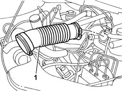
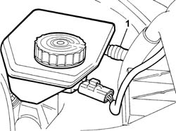
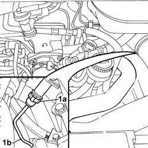
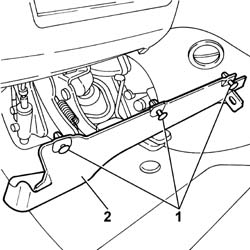
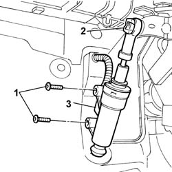

1820B40 HOSE FROM CLUTCH RESERVOIR TO MASTER CYLINDER (PUMP) - R + R
- Path
- Procedures > 18 CLUTCH UNIT > 1820 CLUTCH RELEASE CONTROLS > 1820B HYDRAULIC CLUTCH SYSTEM > 1820B40 HOSE FROM CLUTCH RESERVOIR TO MASTER CYLINDER (PUMP) - R + R
- Kind
- repair procedure (removal / refitting; the operation number is the code)
- Applies to
- engines: 2.0 16v, 2.0 16V JTD, 2.2 16V JTD; all production periods
- Interactive page
- https://sloeber94.github.io/elrnDB-fUlss/en/#/179007224
Applies to: engines: 2.0 16V JTD, 2.2 16V JTD; all production periods
 Removing
Removing
 Refitting
RefittingOp. 5010B18 CLIMATE CONTROL UNIT AIR INTAKE - R.R.
See in Op. 1048A10
1. Remove the turbocharger flexible air intake pipe.

Applies to: engines: 2.0 16V JTD, 2.2 16V JTD; all production periods
- Undo the clutch fluid reservoir plug and remove the protection.
- Remove the clutch fluid using a special syringe.
1. Disconnect the master cylinder flexible pipe from the brake/clutch fluid reservoir.

Applies to: engines: 2.0 16V JTD, 2.2 16V JTD; all production periods
Op. 7055B54 UNDER-ENGINE GUARD - R R
- Have a suitable container ready.
1. Disconnect the rapid connector (1a) on the supply pipe (1b).

Applies to: engines: 2.0 16V JTD, 2.2 16V JTD; all production periods
- Lower the vehicle.
- Get inside the vehicle on the driver's side.
1. Release the fixing buttonsusing the special tool.
 | Description | Code | Function |
|---|---|---|---|
. | Knife | 1.878.077.000 | Release the fastening buttons |
2. Remove the lower trim.

Applies to: engines: 2.0 16V JTD, 2.2 16V JTD; all production periods
1. Undo the bolts fixing the pump master cylinder.
2. Expand the tabs in the slot and move the pump master cylinder push rod away from the pedal.
3. Disconnect the flexible pipe from the pump master cylinder.
- Working via the engine compartment, fastene a sensor to the flexible pipe and extract it from the passenger compartment.

Applies to: engines: 2.0 16V JTD, 2.2 16V JTD; all production periods
Refitting
Removing- 'working from inside the passenger compartment, secure the flexible pipe to the sensor.
- Working via the engine compartment, pull the sensor until the flexible pipe comes out and connect it to the brake/clutch fluid reservoir.
- Remove the sensor and connect the flexible pipe to the pump master cylinder.
- Tighten the bolts fixing the pump master cylinder.
- Secure the master cylinder push rod to the pedal applying pressure.
- Fit the lower dashboard trim, left hand side.
- Raise the vehicle.
- Connect the rigid fluid supply pipe rapid connector.
Op. 7055B54 UNDER-ENGINE GUARD - R R
- Fit the turbocharger flexible air intake hose.
See in Op. 1048A10